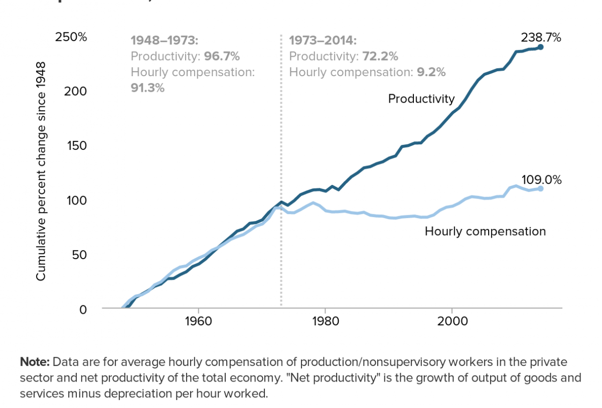

Explore
My Interests & Hobbies
What I get up to:
Deep Dive
Music

One of my major interests academically and personally has been the effects that income and wealth inequality have on the real economy.
One of the areas I find myself most drawn to academically is the relationship between income and wealth inequality and the real economy. Not inequality as an abstract moral question, though that matters too, but the concrete macroeconomic mechanics of it. What actually happens to consumption, investment, and growth when wealth concentrates? How does the composition of who holds assets shape the transmission of monetary policy? These are questions I think about a lot, and they have a way of showing up everywhere once you start looking. A lot of that interest was sparked by the kind of content I grew up watching. I've spent a real amount of time with people like Scott Galloway and Ed Elson on Prof G Markets, who are good at making the structural forces behind markets feel urgent and personal, and Gary Stevenson, whose whole framework around wealth concentration and stagnation clicked something into place for me. What I appreciate about that end of the conversation is that it connects the numbers to lived experience in a way that most economics education frankly doesn't bother to do. At the same time I'm equally drawn to the more rigorous, quantitative side of financial analysis. Ben Felix and Patrick Boyle both do something I find genuinely rare, which is bringing serious academic finance into formats that are actually digestible without dumbing anything down. Felix in particular has shaped how I think about factor investing and the gap between what retail investors believe and what the evidence actually supports. Boyle approaches markets with a kind of dry, forensic skepticism that I find really compelling, especially when he's pulling apart a narrative that everyone has decided is true. What ties all of this together for me is a belief that the distribution of wealth is not just a social issue sitting off to the side of economics. It is a core variable in how economies function. When a small share of the population holds a disproportionate share of financial assets, the marginal propensity to consume those gains is low, capital gets recycled into asset price inflation rather than productive investment, and monetary policy tools designed for a different distributional reality start to behave unpredictably. Gary Stevenson's argument that persistent wealth concentration produces persistent stagnation is not obviously wrong, and I think it deserves more serious treatment in mainstream economic discussion than it typically gets. I'm still forming a lot of these views, and one of the things I'm most excited about as I get further into the economics side of my degree is being able to engage with this literature more formally. The intersection of distributional economics, asset pricing, and policy transmission feels like one of the more important and underexplored areas in applied economics right now, and it's somewhere I'd like to do real work eventually.
Top Media
My Favourite Watches & Listens
Here are some of the places I go to for reporting on these topics
- Patrick Boyle Patrick Boyle's Youtube - Great informative dry humor from a hedgefund manager turned professor
- Gary Stephenson — sGary Stephenson's Youtube - Former Citi Bank trader turned W/I inequality politcal figure
- Ben Felix —Ben Felix's youtube account - Very interesting quantitative analysis from a Canandian hedgefund manager
- Scott Galloway — Prof G Market Podcast (with Ed Elson) - Good daily listen for market vitals.
- Ed Elson - Ed Elson's LinkedIn
Gallery
Music Production
I've been playing piano and guitar for many years, and have been using music production softwares for almost a decade now (back in the Live 9 days).
Let's Connect
Share a passion for data science, economics, or music production? Have questions or want to chat? Reach out — I'm always happy to connect.